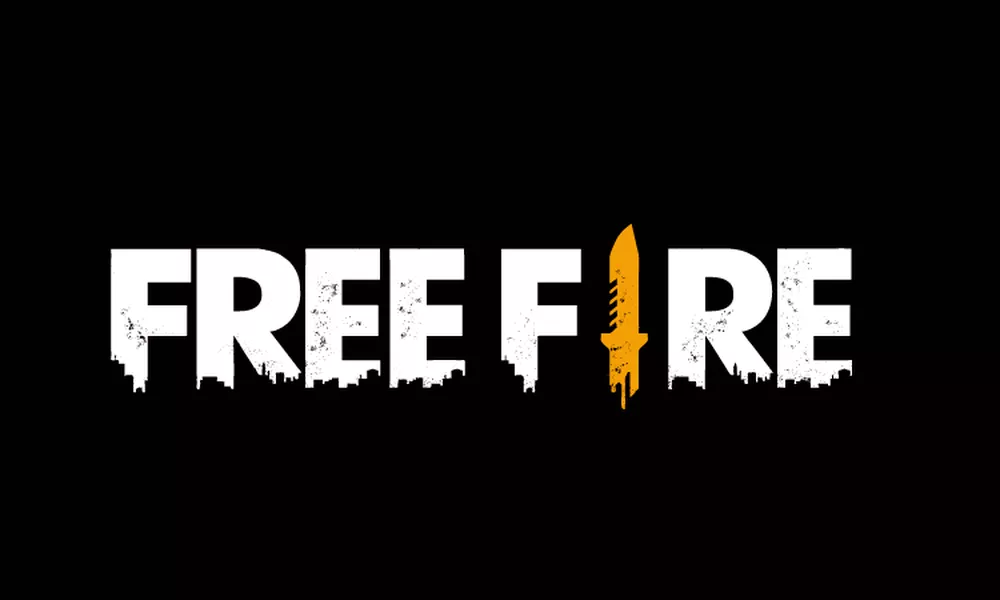

Popular jogo mobile da Garena, Free Fire está banido na Índia. O game faz parte de uma lista de 54 aplicativos de origem ou ligação chinesa que não podem ser mais vendidos ou comercializados no país, seguindo recomendação do Ministério do Interior da Índia. Trata-se de uma nova retaliação à China que começou em 2020 com banimentos ao Tik Tok e ao PUBG.

O Ministério do Interior da Índia recomendou o banimento seguindo o artigo 69A do Information Technology Act, que lhe dá "poder para interceptar, ou monitorar, ou descriptografar qualquer informação por meio de qualquer recurso computadorizado". Isso acontece quando o governo vê "necessidade em agir no interesse da soberania ou integridade nacional, defesa ou segurança do estado, relações de amizade com países estrangeiros, manutenção da ordem, ou de impedir o incitamento à prática de qualquer delito cognoscível relacionado ou na investigação de qualquer delito".
A onda de banimentos do governo indiano a aplicativos de origem chinesa vem desde 2020. Índia e China vivem tensão em meio a confrontos na fronteira do Himalaia, nunca devidamente limitada.
Em comunicado, a Garena se limitou a reconhecer a ausência do Free Free na Google Play Store (Android) e na App Store (iOS), sem citar o banimento.
- Estamos cientes de que Free Fire no momento está indisponível nas lojas Google Play e iOS na Índia e de que o jogo no momento não está operante para alguns usuários no país. Estamos trabalhando para resolver essa situação e pedimos desculpas aos nossos usuários por qualquer inconveniência.